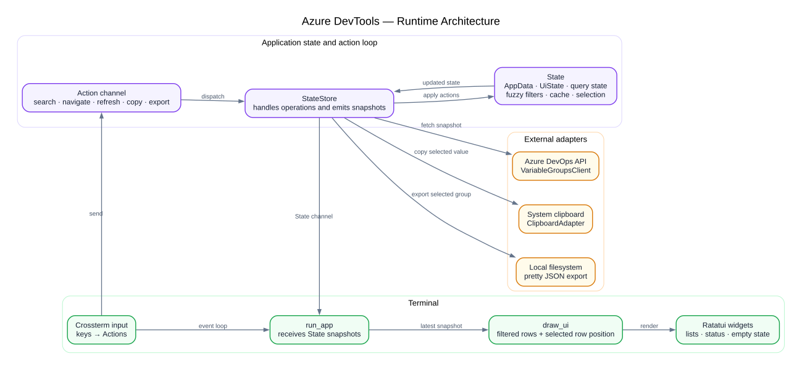
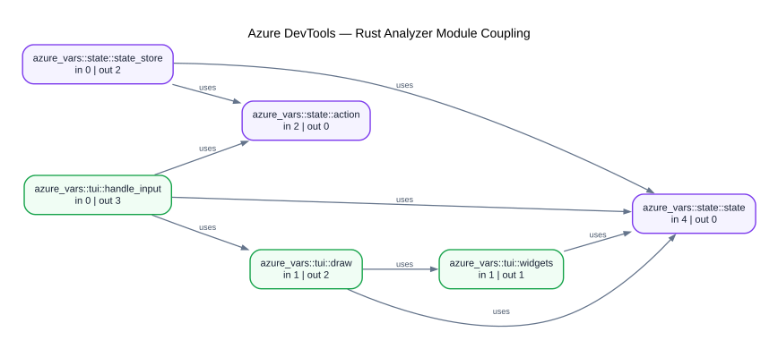
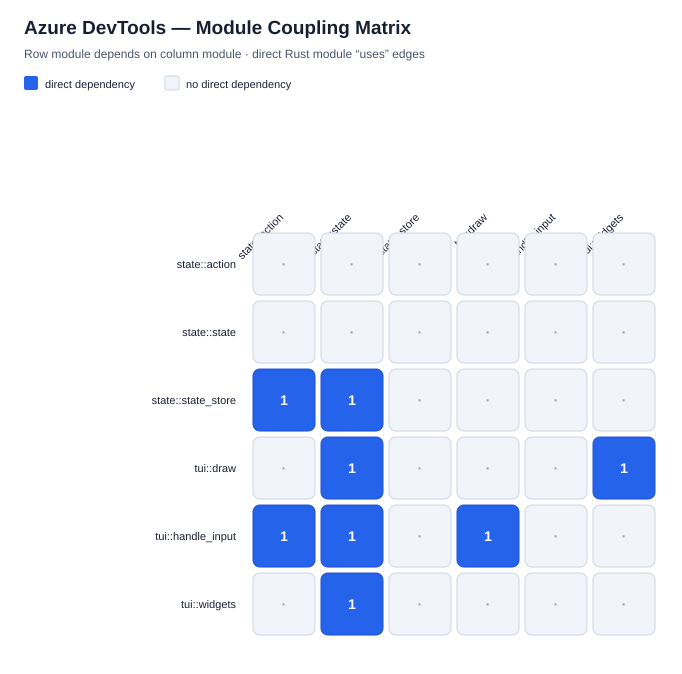
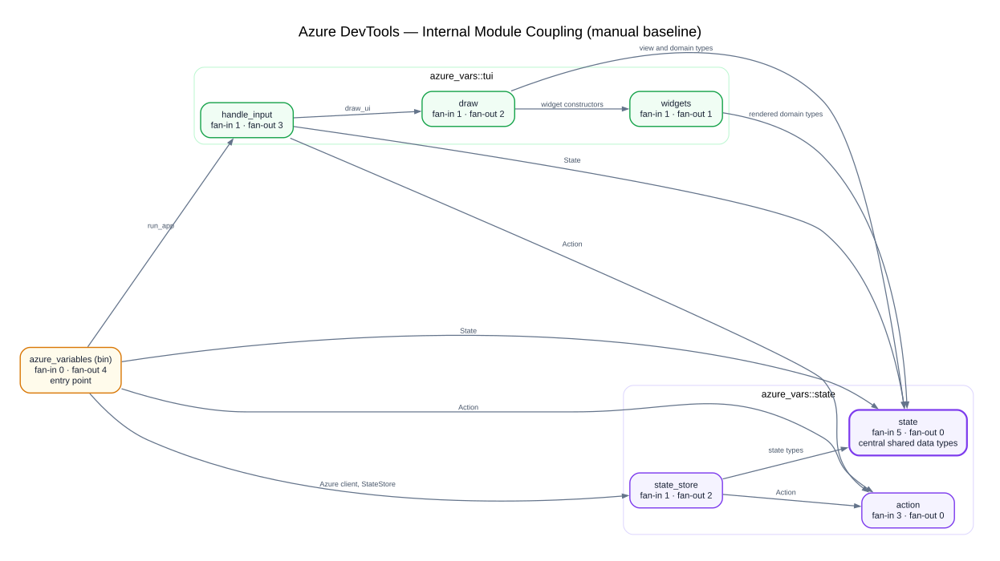

Static Rust public API analysis
The Rust interface and public-module listing is now backed by cargo-public-api output rather than a hand-drawn architecture diagram. Open the generated public API report for the derived module tree, exact analyzer output, counts, and extraction provenance.
This analysis covers the public Rust surface; it does not infer internal dependency edges or runtime behavior.
Executive summary
The implementation keeps the existing terminal workflow and Azure DevOps scope, but moves the rules for queries, filtering, selection, refresh preservation, and status feedback into the state/action flow.
System architecture

Generated deterministically with Graphviz 3.31.0 (WASM), dot engine. View the DOT source to inspect or regenerate the diagram.
Module coupling — analyzer-derived library graph

This view uses cargo-modules 0.28.0 to parse the library crate and extract module-to-module uses edges. Fan-in and fan-out count distinct incoming and outgoing module edges. The graph layout is rendered deterministically with Graphviz 3.31.0 (WASM).
The analyzed library graph contains 6 modules and 8 direct dependency edges. azure_vars::state::state is the most depended-on module (fan-in 4); azure_vars::tui::handle_input has the widest direct dependency set (fan-out 3). The binary target is not included in this library-only graph.

cargo modules dependencies --lib --no-externs --no-sysroot --no-fns --no-types --no-traits --no-owns --layout dot
The checked-in postprocessor creates the degree-labeled graph and matrix from analyzer output.
Module coupling — manual baseline

This first-pass graph is compiled manually from inspected Rust module imports. It also includes the executable’s direct imports of the library, which the analyzer’s --lib graph above intentionally omits. Arrows mean “depends on”; counts are distinct internal modules.
Use this view to see the CLI consumer relationship, and the analyzer-derived graph and matrix as the reproducible library coupling view. Neither view measures call frequency or runtime coupling.
View coupling DOT source · For analyzer-derived public module structure and interface entries, see the Rust public API report.
Module structure and responsibility
Search pipeline
Variable Group search
- Matches and ranks names only.
- Non-matches are omitted.
- The shared query remains after leaving search mode.
Variable Entry search
- Matches names for every entry.
- Matches visible values for non-secret entries.
- Secret entries match names only, never their placeholder.
- Each Variable Group has a query keyed by group name.
Selection and refresh reconciliation
Refresh success clears a prior error status. Refresh failure leaves the previously loaded snapshot visible and adds an error status. Navigation never moves outside the filtered result indices.
Operation feedback
name=value. Success and clipboard errors appear in the status area; no selection also produces a clear error.value is replaced with <secret value hidden>, while is_secret remains in the JSON.Rendering seam
The list widgets no longer compare whole domain entries to locate the selected row. This removes clone equality as a selection mechanism and makes duplicate or reordered entries unambiguous.
Testing strategy and current evidence
28 library tests passed in the implementation verification. Formatting and whitespace checks also passed.